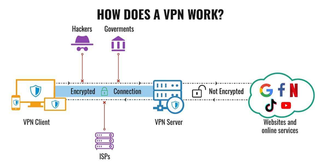

Use a Virtual Private Network (VPN)
Although it is not possible to be completely invisible online when using social media networks such as Tiktok, there are numerous steps you can take to safeguard your information and personal data. One well-known method that has gained popularity for its effectiveness lately is the use of a VPN.
As the name suggests, a VPN creates a private network that connects your device to their server. It encrypts or conceals your data, which essentially protects it. When you go online without a VPN, for example, logging into Tiktok, it is your internet service provider that connects you to that website or application and gives you a distinct IP address. Of course, this means that all of your online activity is visible to your internet service provider as well as the websites you visit, even if you use incognito mode. Having a VPN prevents this from happening by creating a secure link between your device and a VPN server, and makes your data unreadable by your internet service provider as well as the websites you visit. Only the shared VPN server is visible to those two parties, which also changes on a regular basis.
Think of it like this; your data is a car, and a VPN is a tunnel. When you pass through that tunnel towards your destination, any entity outside that tunnel will not be able to see nor track your whereabouts. Aside from this, a VPN also enables you to do a myriad of things such as bypassing government censorship, changing your location, access content unavailable to your country, and access public wifi networks safely.

How VPN works (Bischoff, 2021)
However great a VPN is, it still cannot grant you total anonymity, especially when you manage your cookies poorly. It is also unable to fight off viruses, malware, and spyware, so it is best used with antivirus software. Additionally, VPNs will help you access content such as programs from streaming services that are exclusive only to specific countries, however, you cannot do so without a subscription. It will not give you access to paid content for free. At the end of the day, VPNs are helpful tools, but the primary steps to securing your privacy online should still be done by you.
A VPN will help you traverse digital landscape safely
Nevertheless, VPNs as tools for security and privacy remain essential for the masses, as this is the only technology that does an excellent job at providing an additional layer of security as you browse through the internet, prevent trackers from tracing your IP address, and protect you as you connect to public Wi-Fis. This is especially helpful whenever you use Tiktok because the company has stated that they do collect data from you such as your IP address and device IDs, which is stored in their system.
In the context of Tiktok, one should be aware also that using VPN to change locations will also change the type of videos and content seen in your feed. If you are actually located in the Philippines and your VPN location settings changed to a location in the USA, your feed content/videos will probably show more American content or popular users based in the USA. This is important to keep in mind when you want your content to be “personalized”, or not. This type of “personalization” is a hallmark of 21st century internet culture, and VPNs might help with rectifying the issue of exposed personal information and data.